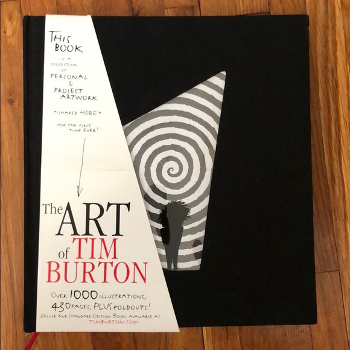

|
|
Burton on Burton edited by Mark Salisbury (1995, revised editions 2000, 2006) | The Melancholy Death of Oyster Boy & Other Stories (1997) Tim Burton |
|  The Art of Tim Burton written by Leah Gallo (2009) | Art of Tim Burton: Things You Think About in a Bar edited by Holly Kempf and Leah Gallo |